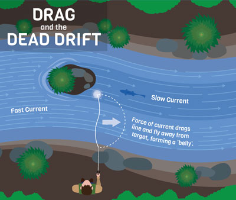

Where should I go fly fishing?
The top 5 best places to go fly fishing for trout are Arkansas, North Carolina, Colorado, Idaho and Montana. When looking for spots to fish on a river, you should look for places where the fast moving current meets a slower or still part of the water. Fish like to hang out in the slow moving water so that they are not wasting their energy swimming through the fast moving water. They sit in the spot where these two places meet because the fast moving water is a conveyor belt full of food for the fish. The fish sit in the slow moving water, wait for the fast moving water to wash food down, then go and grab a quick bite to eat. One other place that is a popular hangout spot for fish is spots on the river that contain deep water. Deep water tends to be slow moving and it also stays cooler in the summertime.
